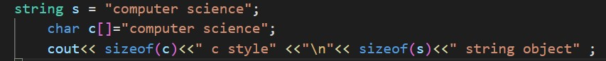
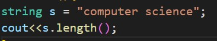
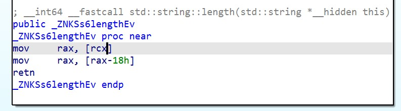
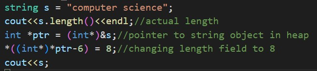

C style strings are nothing but character arrays terminated by a null character - '\0'.Such strings can be exploited to
perform buffer overflow or stack smashing. C++ provides an alternative,more secure way for implementing strings using
string class which is a part of Standard Template Library.
Understanding implementation of strings in c++

OUTPUT
17 c style
8 string object
Notice that the size of the character array is equal to the size of actual string + 1 (for '\0').But for
string object size is equal to 8 bytes.But printing both 'c' and 's' using cout gives same result.
From this we can understand that c style strings store all the characters directly in the stack,whereas the string
object only has a pointer(8 bytes for a 64 bit machine)stored in the stack.
STRING LENGTH FUNCTION

To understand more about the implementation, lets try to disassemble length() method of the string class
Tool Used - IDA PRO

The pointer that is stored in 's' is passed to length() and the function returns an integer that is 24 bytes(18 in hexadecimal)
before the location pointed by the pointer.Therefore the pointer stored in 's' is address of a structure in heap which has length of the string,the string itself and might possibily have more fields for storing attributes of the string object.
In c style strings , the length of the string is determined by the null ternminating character.But in string class
objects,length is determined by the length field present in the structure.This can be proved with
a small example.
CHANGING LENGTH FIELD BY EXPLOITING POINTERS

OUTPUT:
16
computer